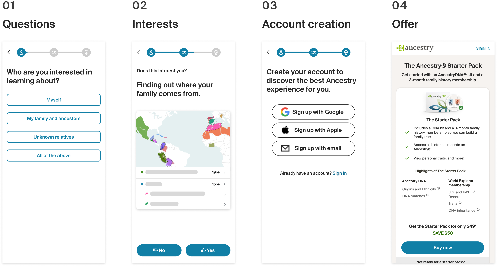
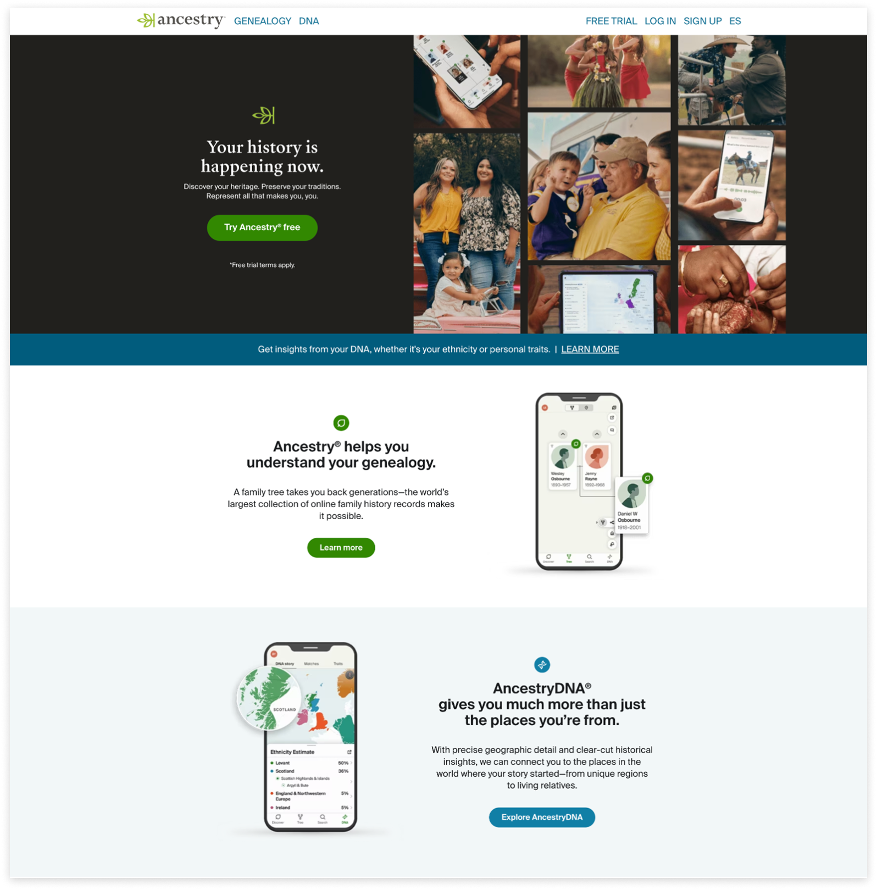

Role: Lead Product Designer | Device: Mobile & Desktop Web | Time: Q1 2024
I worked with another designer completed the end-to-end Ancestry onboardign questionnaire MVP from the logged out homepage to account creation and offer sign ups. We were able to meet tight deadline and deliver the design within a month. The MVP got postive results and we were able to identify areas to improve and launched more tests to improve the conversions in the following year.
Pic. 1 Key sections of the LOHP questionnaire flow
Ancestry's logged out pages attract over 20 million each month, but only 2.85% ending up creating accounts, and out of those who registered, only 28% covert to a free trial and 3.5% convert to a paid offer.
Pic. 2 Ancestry's logged out homepage
From interviews and surveys from the homepage, we learned:
Pic. 3 Offer pages of different family history membership packages and DNA testing packages
Marketing team ran a LOHP quiz directing users to an offer that suits their needs, it increased DNA conversion, gross subscriber addition and signups. But for mWeb it dropped subscriber conversion. From customer insights we learned most of our mWeb customers have a DNA mindset who have very little knowledge of what our family history product offer. Thus the tests where we highlighting membership benefits drove more conversions.
Pic. 4 Previous LOHP quiz
We saw a chance to redesign the LOHP quiz to:
To ship before the St Patricks Day campaign, we had a very tight timeline. Yet we have multiple stakeholders from different organizations including marketing, onsite, commerce, and our product org leadership. I set up the brainstorm Figjam for our PM and had everyone worked together to determine the flow. Then I worked with the other designers to complete wireframes and designs.
Pic.5 General flow from cross-functional workshops
I mapped out the logic visually in a flowchart to help identifying all the use cases and offer combinations.
Pic.6 Offer package combination logic diagram
The entire flow includes 3 major sections: questions, interests, and offers. Due to the time constraits, eng team confirmed that we could only reuse the existing account creation flow. So we just added iframe and didn't redesign that section of the flow.
For the background questions, I used selection buttons for single-select to reduce frictions, and added info banner to explain why we ask the questions. Progress bar indicates the steps till getting the recommendations.
Pic. 7 Background questions in the questionnaire
I embedded product values in the interest questions. Initially I wanted to do swiping left and right for mWeb. After checking with eng team on the feasibility, with the time constraints I had to forgo the idea.
Pic. 8 Sample interests questions embedded with product values
With the time constraints, our eng team can only implement the existing account creation flow into our questionnaire. But we were able to add a loading screen empathizing the value of answering the questions before showing the recommendations.
Pic. 9 MVP account creation and offer sign up flow
The MVP was a positive test and we rolled out the test and planned to expand entry points to draw more traffic into the questionnaire. However we still wanted to figure out why the sign ups were flat. When we looked into the funnel and found out most people dropped out at the first question among all the questions.
Pic. 10 Funnel graph with opportunity areas to iterate
After the MVP we tested adding entry points, adding visuals to entry point(in which I reused the illustrations created by the other designer and gave her credits), and animate what users can do to draw more traffic.
Pic. 11 LOHP with winning entry point tests
We decoupled the DNA and membership bundles which significantly increased offer sign ups and all the conversion rates.
Pic. 12 LOHP offer decoupling DNA and membership
The redesign introduced the values that Ancestry's two major products provide. More users are intrigued to create the account to try the product but we missed the opportunity to convert customers who are not ready to purchase DNA kits to try membership free trial first.
From the background results, most customers could actually benefit from a membership and are able to find content in Ancestry's family history product. Decoupling the DNA kit and family history membership would convert more users to try membership trial first before they are ready to purchase DNA kits. We ran a following test which increased offer sign ups and all the conversion rates. If we have predicted that when designing for the MVP we would have yeild even better results. A good learning for the future projects.